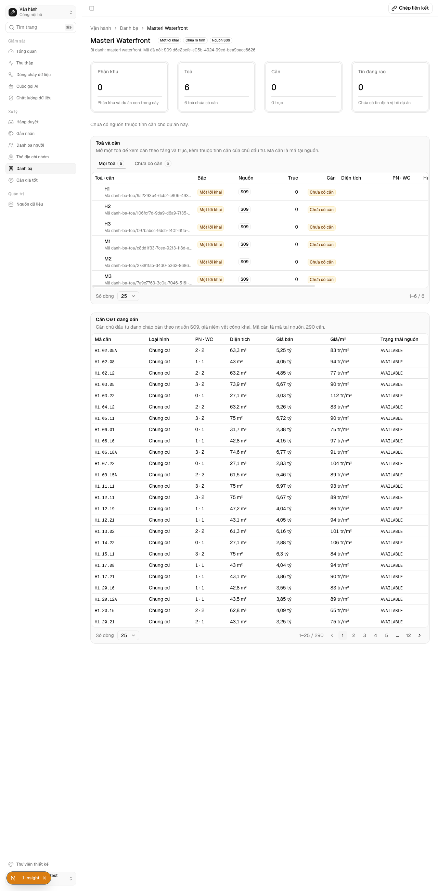
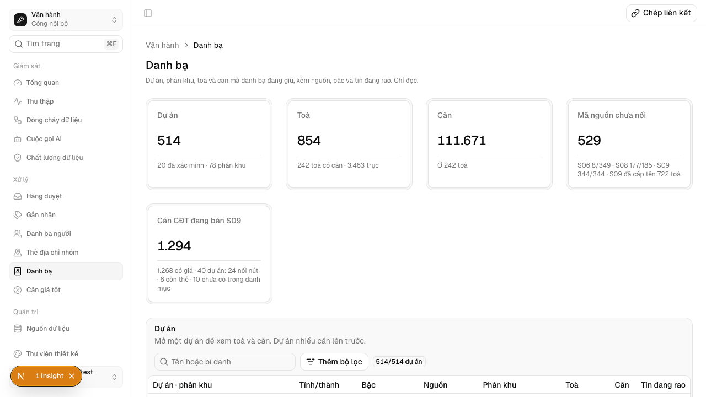
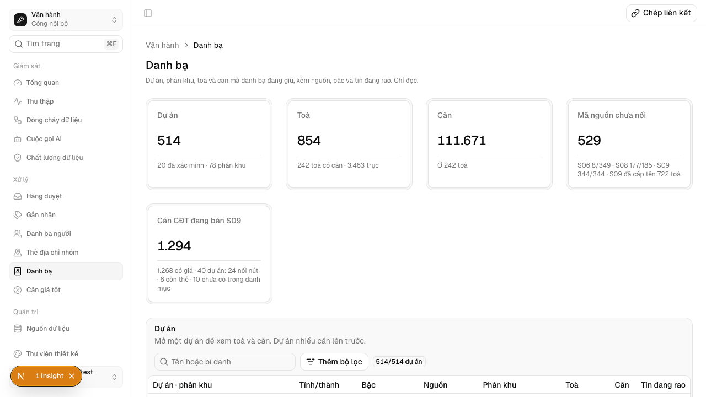

Quỹ căn và căn cao tầng S09 vào stg không mang tầng A, quỹ căn có giá hiện trên Danh bạ Ops
Vì sao làm
DA56 nạp hai kind mới của nguồn S09 (DATA-CONTRACT v16): quỹ căn (quy-can, giá chủ đầu tư và trạng thái, công khai theo ROADMAP §3 mục 38) và căn cao tầng theo tầng (can-cao-tang, gói 2). Bản thu đã về thư mục chờ: quỹ căn đủ 40 dự án, 1.294 căn; căn cao tầng hai bản 99.107 và 108.538 căn. Raw quỹ căn mang URL ảnh trên tên miền CDN của nguồn và toạ độ từng căn — tầng A, không được vào stg.
Đã hứa
- AC-1 — Hai kind v16 nạp vào stg không nhân dòng: Given DB của riêng lượt áp đủ migration và fixture sinh từ khuôn bản thu v16 (đã thay tên, thay URL và toạ độ bằng giá trị giả lập), có trang quỹ căn rỗng, tầng rỗng, item lỗi, item thiếu `sourceId`, một tệp sai băm, When nạp fixture hai lần qua bộ nạp S09, Then lần một ghi đúng số dòng hợp lệ của từng kind, lần hai ghi 0 dòng; item hỏng bị bỏ và đếm theo lý do; tệp sai băm làm lượt dừng trước khi ghi dòng nào.
- AC-2 — Stg không mang URL ảnh hay toạ độ: Given bảng kiểm kê viết trước liệt kê MỌI khoá lá của một căn quỹ căn và của một item căn cao tầng trong bản thu thật, mỗi khoá một kết luận giữ hay bỏ (bỏ: `galleries`; `geolocation` theo Hỏi-2), và fixture mà mọi căn có hai khoá đó, When nạp, Then 0 dòng stg còn khoá bị bỏ ở bất kỳ căn nào; mỗi khoá giữ bằng nguyên văn fixture, số assert bằng số khoá của bảng; bộ nạp in số căn đã bỏ trường. Đột biến bỏ bước lọc thì ca đỏ nêu «galleries».
- AC-3 — Quỹ căn chọn bản thu đủ, hợp căn theo id: Given ma trận viết trước, mỗi ô một assert trên view quỹ căn: bản hỏng trước bản đủ · bản hỏng SAU bản đủ · một căn có ở hai trang · dự án thiếu một trang (Σ id < `tongNguon`) · dự án chỉ có bản hỏng · hai bản đủ khác giá, When đọc `v_s09_db_quy_can` và `v_s09_db_quy_can_doi_soat`, Then mỗi dự án lấy đúng bản đủ mới nhất; căn hai trang đếm một lần; dự án thiếu trang hay chỉ có bản hỏng ra 0 căn và hiện ở view đối soát với `du = false`; hai bản đủ thì giá của bản mới hơn.
- AC-4 — Căn cao tầng đọc từ bản tầng tốt mới nhất: Given ma trận viết trước, mỗi ô một assert trên `v_s09_db_can_cao_tang`: tốt rồi lỗi · lỗi rồi tốt · tốt rồi rỗng · `code` khác `name` · một tầng ở hai bản thu, When đọc view, Then bản lỗi và bản rỗng không đè bản tốt; tầng ở hai bản lấy bản tốt mới nhất, căn không đếm trùng; view trả cả `code` lẫn `name` nguyên văn, kèm uuid và tên nguyên văn của dự án, toà, tầng.
- AC-5 — Số trong stg khớp manifest bản thu thật: Given DB thử chép DB máy thu, áp 115, 125, 130, nạp gói 1 và dựng danh bạ như lượt thật của DA42, rồi nạp mọi bản thu v16 hợp lệ có trong thư mục chờ lúc chấm (kiểm băm trước), When chạy bộ đếm độc lập đọc thẳng snapshot, Then theo từng bản thu và từng kind: số item, dự án, trang hay tầng, căn trong stg bằng bộ đếm và bằng `manifest.counts`; view quỹ căn ra 1.294 căn ở 40 dự án, 1.268 căn có giá; view đối soát của bản hỏng `…T024022939` có 0 dòng `du` rỗng và số dòng `du = false` bằng số dự án của bộ đếm; 40 dự án quỹ căn chia 24 nối nút · 6 còn thẻ · 10 không có trong danh mục gói 1; số dòng stg hai kind có payload chứa `http` hay tên miền thật của nguồn (đọc từ sổ nguồn local) bằng 0; lệch một ô thì thoát 1 nêu ô. Chỉ in số.
- AC-6 — Chạy lại và đổi thứ tự nạp không đổi kết quả: Given cùng bốn bản thu, When nạp hai lần, và trên DB thử thứ hai nạp theo thứ tự ngược, Then tập dòng của `v_s09_db_quy_can` và `v_s09_db_can_cao_tang` (băm theo khoá) giống nhau ở cả ba lượt; áp 130 lần hai không lỗi.
- AC-7 — Ô tổng Danh bạ hiện quỹ căn S09 đúng số (cross-layer): Given DB thử của AC-5 đã dựng DA42, When mở `/ops/registry`, Then ô «Quỹ căn S09» hiện số căn, số căn có giá và số dự án bằng SELECT đếm trên view quỹ căn của cùng DB; dòng phụ chia số dự án thành đã nối nút (`project_links` nguồn S09 trạng thái `noi`, gồm cả nút ứng viên) · còn thẻ · không có trong danh mục, ba số cộng bằng số dự án.
- AC-8 — Trang dự án có bảng quỹ căn đang bán (cross-layer): Given một nút dự án nối với dự án S09 có quỹ căn, một nút nối mà không có quỹ căn, và DB không trả được truy vấn quỹ căn, When mở `/ops/registry/[nodeId]`, Then nút có quỹ căn hiện bảng đúng số dòng của view, mỗi dòng mã căn, loại hình, PN · WC, diện tích, giá bán, đơn giá, trạng thái nguồn; nút không có hiện trạng thái trống có chữ; DB lỗi hiện lỗi kèm Thử lại; đang tải hiện Skeleton.
- AC-9 — Không gì rời máy hay lên màn mang tầng A: Given chuỗi tên miền giả lập cấy vào URL ảnh và toạ độ giả lập trong fixture, When chạy bộ nạp, render hai trang của AC-7, AC-8, và đọc danh sách bảng đồng bộ của `pipeline/sync-cloud.mjs`, Then HTML, log bộ nạp và stg không chứa chuỗi cấy; danh sách đồng bộ không có `stg_s09_danh_ba` hay ba view mới; trang chỉ ghi mã `S09`. Bỏ bước lọc thì ca đỏ nêu chuỗi cấy.
- AC-10 — Hồ sơ áp và hợp đồng dữ liệu đi cùng : Given `_acceptance/nap-s09-quy-can-va-can-cao-tang/ap-may-thu.md` và `collector/docs/DATA-CONTRACT.md` trên nhánh, When đọc, Then hồ sơ áp có đủ năm thứ (lệnh áp 130 và lượt nạp bốn bản thu sau khi ZK chép vào `collector/snapshots`, số chạy thử của AC-5, sao lưu trước, cách lùi, lệnh kiểm sau) và thứ tự sau DA42; DATA-CONTRACT có mục «Mở rộng v16» đúng nhánh làn thu @767c70c13, không sửa chữ (so bằng `git diff 767c70c13 -- collector/docs/DATA-CONTRACT.md` rỗng).
Thiết kế
docs/superpowers/specs/2026-11-25-nap-s09-quy-can-va-can-cao-tang-design.md
Quyết định
- 2026-11-25 · Người (Mạnh) · approach · gate1 — Mạnh duyệt Cổng Phạm vi DA56 nguyên văn «duyệt»; Hỏi-1 (ô tổng + khối «Quỹ căn đang bán» trên trang dự án) và Hỏi-2 (bỏ geolocation khỏi stg, raw giữ) đi theo khuyến nghị đã soạn trong hợp đồng.Hợp đồng và design đã soạn theo khuyến nghị của hai câu; câu duyệt không nêu lối khác.
- 2026-11-25 · Người · seal · gate1 —
- 2026-11-25 · Máy · approach · S1 — Đã tra tri thức: Nạp quỹ căn S09 và căn cao tầng S09 vào stg qua migration 130 và DATA-CONTRACT v16, bỏ URL ảnh và toạ độ, quỹ căn có giá lên Danh bạ OpsKho đã khai tri_thuc — bước thiết kế tra trang trước khi chọn.
- 2026-11-25 · Máy · approach · S1 — Hai kind v16 ghi vào bảng stg_s09_danh_ba có sẵn của 115, không tạo bảng stg mới; migration 130 chỉ thêm view.115 đã định nghĩa một bảng cho mọi kind của nguồn s09-danh-ba, kind không CHECK đóng cứng, payload nguyên văn.
- 2026-11-25 · Máy · approach · S1 — Bộ nạp bỏ galleries (URL ảnh) của từng căn quỹ căn trước khi ghi stg; raw giữ nguyên ở máy thu.DATA-CONTRACT v16 đòi stg bỏ URL ảnh trước khi đi bất kỳ đâu vì URL mang tên miền CDN của nguồn.
- 2026-11-25 · Máy · approach · S1 — View quỹ căn chọn bản thu ĐỦ mới nhất của từng dự án (Σ id hợp = tongNguon), không chọn theo captured_at đơn thuần.Lượt 24/11 gọi trang từ 1 trả rỗng cho 354 dự án; một lượt hỏng chạy sau bản đủ sẽ xoá quỹ căn nếu chỉ lấy bản mới nhất.
- 2026-11-25 · Máy · approach · S1 — DA56 giữ lớp stg của can-cao-tang; DA43 đọc v_s09_db_can_cao_tang và AC-1, AC-2 của DA43 do DA56 trả.GS phán 25/11 theo khuyến nghị P1 để tránh hai bộ nạp v16 ở hai nhánh; DA43 chưa thi công.
- 2026-11-25 · Máy · approach · S1 — Quỹ căn chỉ hiện trên Ops ở máy thu; không thêm bảng nào vào đồng bộ cloud, không lên Invest.Ghi dữ liệu lên cloud cần lời riêng của Mạnh; màn đo được trên máy thu.
- 2026-11-25 · Máy · approach · S1 — Hỏi-1: quỹ căn hiện ở hai chỗ — một ô số trong hàng ô tổng của /ops/registry và một khối bảng «Quỹ căn đang bán» trên trang dự án, dưới «Toà và căn».Ô tổng là chỗ thước đo đọc số; bảng trên trang dự án là chỗ người vận hành xem giá từng căn.
- 2026-11-25 · Máy · approach · S1 — Hỏi-2: bỏ luôn geolocation (toạ độ từng căn) khỏi stg quỹ căn trong hàng này.DATA-CONTRACT v16 gọi geolocation là tầng A trong raw nhưng chỉ đòi stg bỏ URL ảnh; danh sách tầng A của AGENTS.md không có toạ độ căn, nên xếp toạ độ là việc của Mạnh.
- 2026-11-25 · Máy · descope · S1 — bỏ design-pass — chỉ thêm một ô số vào hàng ô tổng và một khối data-grid chỉ đọc vào trang dự án có sẵn, khuôn IA không đổi; bản bấm được kiểm ở E8u của S4Màn /ops/registry đã có khuôn ô tổng và data-grid của chuẩn ReUI; khối mới dùng lại component có sẵn, không màu dữ liệu mới.
- 2026-11-25 · Máy · approach · S1 — Hai kind v16 ghi vào bảng stg_s09_danh_ba có sẵn của 115, không tạo bảng stg mới; migration 130 chỉ thêm view.115 đã định nghĩa một bảng cho mọi kind của nguồn s09-danh-ba, kind không CHECK đóng cứng, payload nguyên văn.
- 2026-11-25 · Máy · approach · S2 — Bộ lọc tầng A làm theo danh sách cho phép: khoá cấp một của căn quỹ căn không có trong bảng kiểm kê làm lượt nạp dừng với lỗi nêu tên khoá, thay vì giữ lặng.Phản biện P1: lọc theo danh sách chặn chỉ bắt hai khoá đã biết, khoá mới mang URL sẽ lọt; danh sách cho phép buộc người xếp khoá mới.
- 2026-11-25 · Máy · approach · S1 — Bộ nạp bỏ galleries (URL ảnh) của từng căn quỹ căn trước khi ghi stg; raw giữ nguyên ở máy thu.URL ảnh của quỹ căn nằm trên tên miền CDN của nguồn, mà tên miền nguồn là tầng A; DATA-CONTRACT v16 (gộp trong vòng) cũng ghi stg phải bỏ URL ảnh.
- 2026-11-25 · Máy · approach · S1 — Bộ nạp bỏ galleries (URL ảnh) của từng căn quỹ căn trước khi ghi stg; raw giữ nguyên ở máy thu.URL ảnh của quỹ căn nằm trên tên miền CDN của nguồn, mà tên miền nguồn là tầng A; DATA-CONTRACT v16 (gộp trong vòng) cũng ghi stg phải bỏ URL ảnh.
- 2026-11-25 · Máy · approach · S2 — Mạnh duyệt kế hoạch thi công tám việc nối tiếp (Cổng 1.5, câu «duyệt kế hoạch»).Hạng T3 phải có người duyệt kế hoạch trước S3; kế hoạch ở docs/superpowers/plans/2026-11-25-nap-s09-quy-can-va-can-cao-tang.md @556bdd0a3.
- 2026-11-25 · Máy · fix · S3 — Bảng kiểm kê khoá quỹ căn có 46 khoá chứ không phải 45 như thiết kế ghi; thêm number_of_floors (giữ).Đếm hợp khoá cấp một của mọi căn trong năm bản thu thật ở thư mục chờ ngày 25/11: number_of_floors có ở 60 căn, ngoài mẫu một căn đã đếm ở S1; pipeline/lib/s09-danh-ba-v16-khoa.json.
- 2026-11-25 · Máy · approach · S3 — Soát tên miền thật của S09 bằng tên máy chủ rút từ chính URL ảnh trong bản thu (đọc tại máy, không in), vì sổ nguồn local không có dòng S09.source_registry trên DB máy thu có 15 dòng S01–S16 trừ S09; hợp đồng AC-5 viết «đọc từ sổ nguồn local». Fixture việc 1 soát bằng ba tên máy chủ rút từ URL: 0 trùng.
- 2026-11-26 · Máy · fix · S3 — Nhãn màn đổi «Quỹ căn S09» → «Căn CĐT đang bán S09», «Quỹ căn đang bán» → «Căn CĐT đang bán», cột «Đơn giá» → «Giá/m²»; thêm thuật ngữ «Căn CĐT đang bán» vào CONTEXT.md; khối mới vào danh sách quét ON12. Ô và khối mà AC-7, AC-8 nói tới là hai nhãn mới.Soát trên M5 26/11: thước ON12-AC-1 đỏ vì «quỹ căn» và «đơn giá» là _Avoid_ trong CONTEXT.md (thuật ngữ Danh mục CĐT, Giá/m²) và tệp mới chưa kê vào SCAN_FILES.
- 2026-11-26 · Máy · approach · S3 — Nhận main 4714329fe (HT9) qua nhánh DA42: E11a, E11b chạy hai nửa pipeline trên cụm dùng một lần, bỏ long_running 90; thêm E11c pipeline_that vì nhánh đổi migration trong vùng ca dữ liệu thật.GS 26/11 giao gộp HT9 và khai lệnh suite theo khuôn HT9; suite-neu-doi in «chạy pipeline_that — đổi db/migrations/115…» cho nhánh này.
- 2026-11-26 · Máy · fix · S4-r1 — E11c (pipeline_that) long_running 45 → 90 trước S4Luật GS 26/11 15:40 VN «Hàng kích pipeline_that — khai long_running»: suite này chạy 27–45′ trên Mac mini, trần 45 sát mép (KEV1 vòng 1 bị ngắt). Lời expected và paths không đổi. Cùng sửa với DA42 c54f72ab7.
- 2026-11-27 · Máy · fix · S4-r1 — Danh sách khoá lá viết trước từ bản thu thật (la:quy-can 59 lá, la:can-cao-tang 4 lá do kiemKe sinh); bộ sinh fixture chọn căn theo khoá lá; test đòi fixture mang đúng tập lá của bảng.Finding medium AC-2 lượt chạy lại đúng: lá tính từ fixture, và đo trên bản thật thấy fixture cũ thiếu lá property_furnitures.names (58/59); đột biến đưa lại fixture cũ nay làm ca đỏ gọi tên lá.
- 2026-11-27 · Máy · fix · S4-r2 — Cách lùi 4c của hồ sơ áp thay pg_restore --clean bằng lui-4c.sh: dump vào DB phụ, một giao dịch chỉ xử dòng S09 của airbnb_snapshots và trọn stg_s09_danh_ba, so dấu với dump trước COMMIT; đã chạy thử trên bản chép DB máy thu, về đúng dấu trước.Finding AC-10 vòng 2 đúng và nặng hơn: 14 bảng stg FK CASCADE vào airbnb_snapshots; chạy thử cho thấy lệnh cũ DROP được stg_s09_danh_ba rồi mới hỏng, bảng stg mất trắng (evidence/lui-4c-thu.txt).
- 2026-11-27 · Máy · fix · S4-r1 — AC-8 đo theo từng dòng: mỗi mã căn ở đúng một dòng bảng và chữ cả dòng (loại hình, PN · WC, diện tích, giá bán, giá/m², trạng thái) bằng kỳ vọng viết trước; fixture cho B2.10.03 bộ số riêng và trạng thái LOCKEDreview vòng 1 hình dạng 3: /5 tỷ/ được «4,25 tỷ» thoả và mọi căn cùng AVAILABLE; đã thử hai đột biến (giá trống hiện thành số → đỏ dòng A1.05.02; trạng thái ép AVAILABLE → đỏ dòng B2.10.03)
- 2026-11-27 · Máy · fix · S4-r1 — AC-2 thêm hai ca: mọi khoá lá của căn quỹ căn trong fixture (lá lồng dưới galleries, geolocation, tags, view_count…) mỗi lá một assert theo kết luận của khoá cấp một; bảng căn cao tầng khớp trọn bộ khoá lá của fixture và mỗi khoá một assert giữ nguyên vănreview vòng 1 hình dạng 5: ma trận chỉ phủ 46 khoá cấp một của quỹ căn, bốn khoá căn cao tầng không có assert riêng; đã thử đột biến đổi lá tags[].uuid → ca khoá lá đỏ
Bằng chứng
Các eval
| Eval | Tiêu chí | Loại | Verdict | run_id | verified_at |
|---|---|---|---|---|---|
| E1 | AC-1 | script | PASS | minted-nap-s09-quy-can-va-can-cao-tang-E1-r2 | 2026-11-27T08:20:53Z |
| E2 | AC-2 | script | PASS | minted-nap-s09-quy-can-va-can-cao-tang-E2-r2 | 2026-11-27T08:20:53Z |
| E3 | AC-3 | script | PASS | minted-nap-s09-quy-can-va-can-cao-tang-E3-r2 | 2026-11-27T08:20:53Z |
| E4 | AC-4 | script | PASS | minted-nap-s09-quy-can-va-can-cao-tang-E4-r2 | 2026-11-27T08:20:53Z |
| E5 | AC-5 | script | PASS | minted-nap-s09-quy-can-va-can-cao-tang-E5-r2 | 2026-11-27T08:20:53Z |
| E6 | AC-6 | script | PASS | minted-nap-s09-quy-can-va-can-cao-tang-E6-r2 | 2026-11-27T08:20:53Z |
| E7 | AC-7 | script | PASS | minted-nap-s09-quy-can-va-can-cao-tang-E7-r2 | 2026-11-27T08:20:53Z |
| E8 | AC-8 | script | PASS | minted-nap-s09-quy-can-va-can-cao-tang-E8-r2 | 2026-11-27T08:20:53Z |
| E8u | AC-8 | ui-check | PASS | minted-nap-s09-quy-can-va-can-cao-tang-E8u-r2 | 2026-11-27T08:20:53Z |
| E9 | AC-9 | script | PASS | minted-nap-s09-quy-can-va-can-cao-tang-E9-r2 | 2026-11-27T08:20:53Z |
| E9b | AC-9 | script | PASS | minted-nap-s09-quy-can-va-can-cao-tang-E9b-r2 | 2026-11-27T08:20:53Z |
| E10 | AC-10 | judgment | PENDING-JUDGMENT (MÁY ĐỀ XUẤT PASS, CHỜ NGƯỜI) | — | — |
| E10b | AC-10 | script | PASS | minted-nap-s09-quy-can-va-can-cao-tang-E10b-r2 | 2026-11-27T08:20:53Z |
| E11a | AC-6 | test | PASS | minted-nap-s09-quy-can-va-can-cao-tang-E11a-r2 | 2026-11-27T08:20:53Z |
| E11b | AC-6 | test | PASS | minted-nap-s09-quy-can-va-can-cao-tang-E11b-r2 | 2026-11-27T08:20:53Z |
| E11c | AC-6 | test | PASS | minted-nap-s09-quy-can-va-can-cao-tang-E11c-r2 | 2026-11-27T08:20:53Z |
Chi tiết từng eval
PASS E1 · script
AC-1: Hai kind v16 nạp vào stg không nhân dòng: Given DB của riêng lượt áp đủ migration và fixture sinh từ khuôn bản thu v16 (đã thay tên, thay URL và toạ độ bằng giá trị giả lập), có trang quỹ căn rỗng, tầng rỗng, item lỗi, item thiếu `sourceId`, một tệp sai băm, When nạp fixture hai lần qua bộ nạp S09, Then lần một ghi đúng số dòng hợp lệ của từng kind, lần hai ghi 0 dòng; item hỏng bị bỏ và đếm theo lý do; tệp sai băm làm lượt dừng trước khi ghi dòng nào.
ℹ duration_ms 4287.395167
PASS E2 · script
AC-2: Stg không mang URL ảnh hay toạ độ: Given bảng kiểm kê viết trước liệt kê MỌI khoá lá của một căn quỹ căn và của một item căn cao tầng trong bản thu thật, mỗi khoá một kết luận giữ hay bỏ (bỏ: `galleries`; `geolocation` theo Hỏi-2), và fixture mà mọi căn có hai khoá đó, When nạp, Then 0 dòng stg còn khoá bị bỏ ở bất kỳ căn nào; mỗi khoá giữ bằng nguyên văn fixture, số assert bằng số khoá của bảng; bộ nạp in số căn đã bỏ trường. Đột biến bỏ bước lọc thì ca đỏ nêu «galleries».
ℹ duration_ms 4287.395167
PASS E3 · script
AC-3: Quỹ căn chọn bản thu đủ, hợp căn theo id: Given ma trận viết trước, mỗi ô một assert trên view quỹ căn: bản hỏng trước bản đủ · bản hỏng SAU bản đủ · một căn có ở hai trang · dự án thiếu một trang (Σ id < `tongNguon`) · dự án chỉ có bản hỏng · hai bản đủ khác giá, When đọc `v_s09_db_quy_can` và `v_s09_db_quy_can_doi_soat`, Then mỗi dự án lấy đúng bản đủ mới nhất; căn hai trang đếm một lần; dự án thiếu trang hay chỉ có bản hỏng ra 0 căn và hiện ở view đối soát với `du = false`; hai bản đủ thì giá của bản mới hơn.
ℹ duration_ms 4287.395167
PASS E4 · script
AC-4: Căn cao tầng đọc từ bản tầng tốt mới nhất: Given ma trận viết trước, mỗi ô một assert trên `v_s09_db_can_cao_tang`: tốt rồi lỗi · lỗi rồi tốt · tốt rồi rỗng · `code` khác `name` · một tầng ở hai bản thu, When đọc view, Then bản lỗi và bản rỗng không đè bản tốt; tầng ở hai bản lấy bản tốt mới nhất, căn không đếm trùng; view trả cả `code` lẫn `name` nguyên văn, kèm uuid và tên nguyên văn của dự án, toà, tầng.
ℹ duration_ms 4287.395167
PASS E5 · script
AC-5: Số trong stg khớp manifest bản thu thật: Given DB thử chép DB máy thu, áp 115, 125, 130, nạp gói 1 và dựng danh bạ như lượt thật của DA42, rồi nạp mọi bản thu v16 hợp lệ có trong thư mục chờ lúc chấm (kiểm băm trước), When chạy bộ đếm độc lập đọc thẳng snapshot, Then theo từng bản thu và từng kind: số item, dự án, trang hay tầng, căn trong stg bằng bộ đếm và bằng `manifest.counts`; view quỹ căn ra 1.294 căn ở 40 dự án, 1.268 căn có giá; view đối soát của bản hỏng `…T024022939` có 0 dòng `du` rỗng và số dòng `du = false` bằng số dự án của bộ đếm; 40 dự án quỹ căn chia 24 nối nút · 6 còn thẻ · 10 không có trong danh mục gói 1; số dòng stg hai kind có payload chứa `http` hay tên miền thật của nguồn (đọc từ sổ nguồn local) bằng 0; lệch một ô thì thoát 1 nêu ô. Chỉ in số.
s09-v16-that: khớp mọi ô
PASS E6 · script
AC-6: Chạy lại và đổi thứ tự nạp không đổi kết quả: Given cùng bốn bản thu, When nạp hai lần, và trên DB thử thứ hai nạp theo thứ tự ngược, Then tập dòng của `v_s09_db_quy_can` và `v_s09_db_can_cao_tang` (băm theo khoá) giống nhau ở cả ba lượt; áp 130 lần hai không lỗi.
s09-v16-that: khớp mọi ô
PASS E7 · script
AC-7: Ô tổng Danh bạ hiện quỹ căn S09 đúng số (cross-layer): Given DB thử của AC-5 đã dựng DA42, When mở `/ops/registry`, Then ô «Quỹ căn S09» hiện số căn, số căn có giá và số dự án bằng SELECT đếm trên view quỹ căn của cùng DB; dòng phụ chia số dự án thành đã nối nút (`project_links` nguồn S09 trạng thái `noi`, gồm cả nút ứng viên) · còn thẻ · không có trong danh mục, ba số cộng bằng số dự án.
ℹ duration_ms 1735.235375
PASS E8 · script
AC-8: Trang dự án có bảng quỹ căn đang bán (cross-layer): Given một nút dự án nối với dự án S09 có quỹ căn, một nút nối mà không có quỹ căn, và DB không trả được truy vấn quỹ căn, When mở `/ops/registry/[nodeId]`, Then nút có quỹ căn hiện bảng đúng số dòng của view, mỗi dòng mã căn, loại hình, PN · WC, diện tích, giá bán, đơn giá, trạng thái nguồn; nút không có hiện trạng thái trống có chữ; DB lỗi hiện lỗi kèm Thử lại; đang tải hiện Skeleton.
ℹ duration_ms 1735.235375
PASS E8u · ui-check
AC-8: Trang dự án có bảng quỹ căn đang bán (cross-layer): Given một nút dự án nối với dự án S09 có quỹ căn, một nút nối mà không có quỹ căn, và DB không trả được truy vấn quỹ căn, When mở `/ops/registry/[nodeId]`, Then nút có quỹ căn hiện bảng đúng số dòng của view, mỗi dòng mã căn, loại hình, PN · WC, diện tích, giá bán, đơn giá, trạng thái nguồn; nút không có hiện trạng thái trống có chữ; DB lỗi hiện lỗi kèm Thử lại; đang tải hiện Skeleton.





PASS E9 · script
AC-9: Không gì rời máy hay lên màn mang tầng A: Given chuỗi tên miền giả lập cấy vào URL ảnh và toạ độ giả lập trong fixture, When chạy bộ nạp, render hai trang của AC-7, AC-8, và đọc danh sách bảng đồng bộ của `pipeline/sync-cloud.mjs`, Then HTML, log bộ nạp và stg không chứa chuỗi cấy; danh sách đồng bộ không có `stg_s09_danh_ba` hay ba view mới; trang chỉ ghi mã `S09`. Bỏ bước lọc thì ca đỏ nêu chuỗi cấy.
ℹ duration_ms 4287.395167
PASS E9b · script
AC-9: Không gì rời máy hay lên màn mang tầng A: Given chuỗi tên miền giả lập cấy vào URL ảnh và toạ độ giả lập trong fixture, When chạy bộ nạp, render hai trang của AC-7, AC-8, và đọc danh sách bảng đồng bộ của `pipeline/sync-cloud.mjs`, Then HTML, log bộ nạp và stg không chứa chuỗi cấy; danh sách đồng bộ không có `stg_s09_danh_ba` hay ba view mới; trang chỉ ghi mã `S09`. Bỏ bước lọc thì ca đỏ nêu chuỗi cấy.
ℹ duration_ms 1735.235375
PENDING-JUDGMENT (MÁY ĐỀ XUẤT PASS, CHỜ NGƯỜI) E10 · judgment
AC-10: Hồ sơ áp và hợp đồng dữ liệu đi cùng : Given `_acceptance/nap-s09-quy-can-va-can-cao-tang/ap-may-thu.md` và `collector/docs/DATA-CONTRACT.md` trên nhánh, When đọc, Then hồ sơ áp có đủ năm thứ (lệnh áp 130 và lượt nạp bốn bản thu sau khi ZK chép vào `collector/snapshots`, số chạy thử của AC-5, sao lưu trước, cách lùi, lệnh kiểm sau) và thứ tự sau DA42; DATA-CONTRACT có mục «Mở rộng v16» đúng nhánh làn thu @767c70c13, không sửa chữ (so bằng `git diff 767c70c13 -- collector/docs/DATA-CONTRACT.md` rỗng).
Phán đoán: Ba góc nhìn cùng đề xuất PASS. ap-may-thu.md có đủ năm thứ (sao lưu mục 1, lệnh áp 130 mục 2, cách lùi mục 4, lệnh kiểm sau mục 5, số diễn tập khớp AC-5), nêu rõ áp sau DA42; DATA-CONTRACT.md có mục «Mở rộng v16» và dòng lịch sử schemaVersion 16.
PASS E10b · script
AC-10: Hồ sơ áp và hợp đồng dữ liệu đi cùng : Given `_acceptance/nap-s09-quy-can-va-can-cao-tang/ap-may-thu.md` và `collector/docs/DATA-CONTRACT.md` trên nhánh, When đọc, Then hồ sơ áp có đủ năm thứ (lệnh áp 130 và lượt nạp bốn bản thu sau khi ZK chép vào `collector/snapshots`, số chạy thử của AC-5, sao lưu trước, cách lùi, lệnh kiểm sau) và thứ tự sau DA42; DATA-CONTRACT có mục «Mở rộng v16» đúng nhánh làn thu @767c70c13, không sửa chữ (so bằng `git diff 767c70c13 -- collector/docs/DATA-CONTRACT.md` rỗng).
git diff 767c70c13 -- collector/docs/DATA-CONTRACT.md rỗng
PASS E11a · test
AC-6: Chạy lại và đổi thứ tự nạp không đổi kết quả: Given cùng bốn bản thu, When nạp hai lần, và trên DB thử thứ hai nạp theo thứ tự ngược, Then tập dòng của `v_s09_db_quy_can` và `v_s09_db_can_cao_tang` (băm theo khoá) giống nhau ở cả ba lượt; áp 130 lần hai không lỗi.
ℹ duration_ms 361128.385209
PASS E11b · test
AC-6: Chạy lại và đổi thứ tự nạp không đổi kết quả: Given cùng bốn bản thu, When nạp hai lần, và trên DB thử thứ hai nạp theo thứ tự ngược, Then tập dòng của `v_s09_db_quy_can` và `v_s09_db_can_cao_tang` (băm theo khoá) giống nhau ở cả ba lượt; áp 130 lần hai không lỗi.
ℹ duration_ms 176003.713666
PASS E11c · test
AC-6: Chạy lại và đổi thứ tự nạp không đổi kết quả: Given cùng bốn bản thu, When nạp hai lần, và trên DB thử thứ hai nạp theo thứ tự ngược, Then tập dòng của `v_s09_db_quy_can` và `v_s09_db_can_cao_tang` (băm theo khoá) giống nhau ở cả ba lượt; áp 130 lần hai không lỗi.
ℹ duration_ms 2731764.917958
Vòng verify
- Round 1: xem lịch sử vòng trước (S4 r1 chạy lại do fixture thiếu lá thật).
- Round 2: mọi eval máy xanh; E10 chờ người (judgment), nên verdict PENDING-JUDGMENT.
Tài nguyên
Giới hạn và ngoài hợp đồng
- Căn quỹ căn hay căn cao tầng vào bảng `units`, tách mã TÒA.TẦNG.CĂN, bí danh căn S16/S08 — DA43.
- Khu, căn thấp tầng — DA50.
- Đồng bộ quỹ căn lên cloud và cổng Invest — cần lời riêng của Mạnh về ghi cloud.
- Lịch sử giá quỹ căn theo thời gian — chỉ bản mới nhất.
Giao
chưa ghi quan sát production